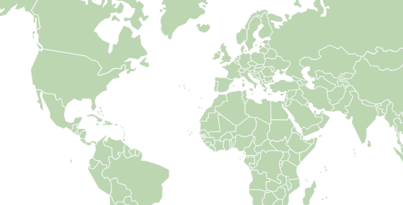

Largest and fastest growing youth-led digital equity 501(c)(3) nonprofit in Florida
Technology shouldn’t determine opportunity.
Bytes for Better Lives bridges the digital divide through tech help for seniors, digital literacy for kids, and device donations for families.
Our mission and visionOur impact, thanks to your support
What We Do
Technology access with patience, safety, and follow-through.
BFBL combines direct service with education: students help seniors feel more confident with technology, support children through donations and learning, and build chapters that can serve new communities with clear standards.
Where we work
Our Reach
Tap any marker to see what we’re doing there.

Leadership
Board of Directors
The board of directors guides BFBL programs, partnerships, chapter growth, and student volunteer coordination.
Chapters
A growing service model with chapters across communities.
Eleven chapters — from South Florida to New York, Virginia, Los Angeles, and abroad — run senior tech help, digital-literacy lessons, and donation drives in their own communities.
Photo Stories
Recent moments from BFBL service.
Each photo opens into the story behind the event, including the date, location, chapter, and category.